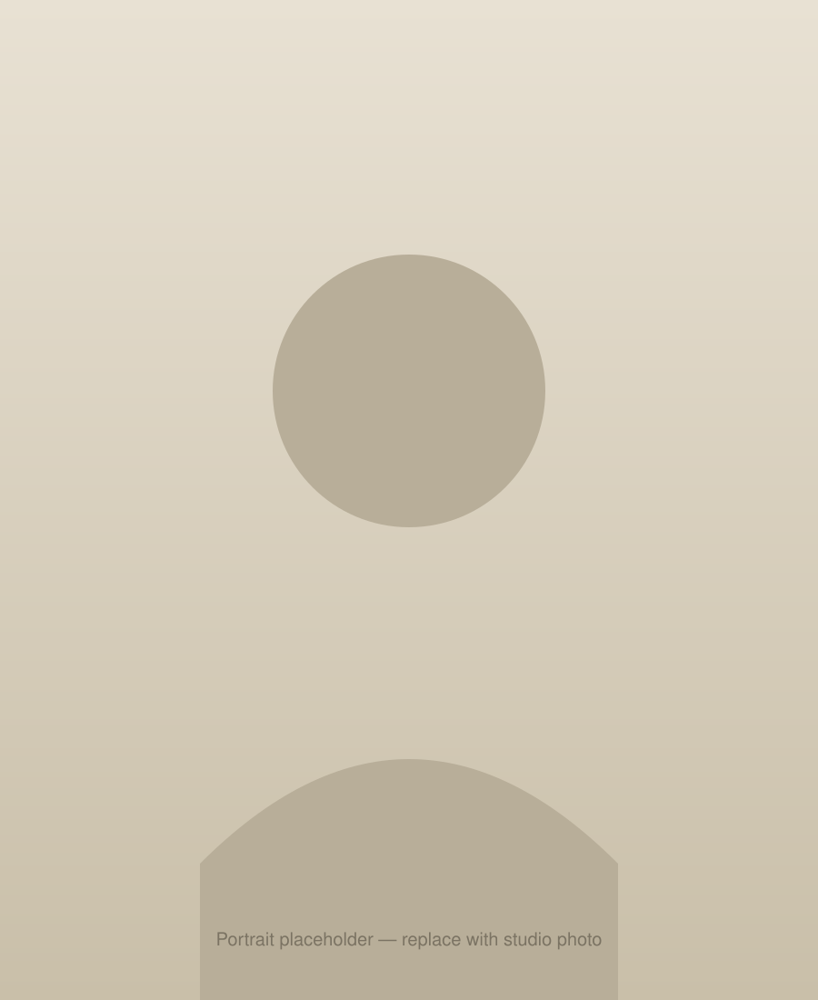

Paintings that hold onto Jersey's shifting coastal light — quiet, considered, and made slowly by hand.

Maureen paints from a small studio in Jersey, working in oils to capture the island's coastline, farmland, and quiet domestic corners. Her practice is slow and observational — many pieces begin outdoors and are finished over weeks back in the studio.
Placeholder — replace with Maureen's real story, journey, and approach to painting.
Explore the recurring themes in Maureen's practice, from the coastline to the studio table.
A selection of original paintings currently available to purchase directly from the studio.
A look at recent paintings that have found homes with collectors in Jersey and beyond.
Every enquiry is answered personally by Maureen. Whether you'd like to purchase a piece, ask a question, or discuss a commission, get in touch below.